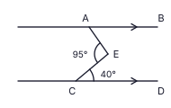
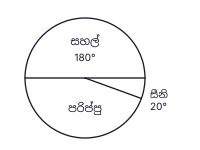
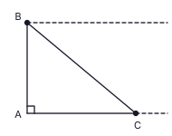
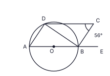

A කොටස
සියලුම ප්රශ්නවලට මෙම ප්රශ්න පත්රයේම පිළිතුරු සපයන්න. අවශ්ය තැන්වල π = 227 ලෙස ගන්න. (ලකුණු 2 × 25 = 50)
රෝහලක වාට්ටුවක් පින්තාරු කිරීමට සේවකයින් 12 දෙනෙකුට දින 20ක් ගතවේ. එම වේගයෙන්ම වැඩ කරමින් දින 15කින් පින්තාරු කිරීම අවසන් කිරීමට තවත් සේවකයින් කී දෙනෙකු එක් කළ යුතුද?
රූපයේ AB ∥ CD වේ. AÊC = 95° සහ EĈD = 40° නම් BÂE හි විශාලත්වය සොයන්න.

සුළු කරන්න: 56x + 34x − 12x
ත්රිකෝණාකාර පාදම සහිත සෘජු ප්රිස්මයක මුහුණතක් ලෙස නොතිබිය හැකි චතුරස්රය පහත දැක්වෙන ඒවායින් තෝරා (✓) ලකුණ යොදන්න.
(i) සමචතුරස්රයක් [ ] (ii) සෘජුකෝණාස්රයක් [ ] (iii) සෘජුකෝණාස්රයක් නොවන සමාන්තරාස්රයක් [ ]
රූපයේ දැක්වෙන වට ප්රස්තාරය මගින් සුපිරි වෙළඳසැලක එක් දිනක දී විකුණන ලද සහල්, සීනි සහ පරිප්පු පැකට් ගණන නිරූපණය කෙරේ. සහල් සඳහා වන කේන්ද්රික කෝණය 180° ද සීනි සඳහා වන කේන්ද්රික කෝණය 20° ද වේ. සීනි පැකට් 30ක් විකුණා ඇත්නම් විකුණන ලද පරිප්පු පැකට් ගණන සොයන්න.

රූපයේ O කේන්ද්රය වූ වෘත්තයේ AB ජ්යාවේ මධ්ය ලක්ෂ්යය C වේ. DOC සරල රේඛාවකි. AÊB = 150° නම් CD̂B හි විශාලත්වය සොයන්න.

සාධක සොයන්න: 7x2 − 28
lg 5.4 = 0.7324 නම් lg 5400 හි අගය ලියන්න.
වී ගොයමක සිරස් කණුවක් AB වේ. කණුවේ මුදුන වන B හි කුරුල්ලෙකු ද සමතලා පොළොවේ C ලක්ෂ්යයේ ගෙම්බෙකු ද සිටී. BÂC = 90° වේ. රූපයේ C සිට B හි ආරෝහණ කෝණය a ලෙස ද B සිට C හි අවරෝහණ කෝණය b ලෙස ද ලකුණු කර a හා b අතර සම්බන්ධතාව ලියන්න.

රෝහලක ඖෂධයක් ගබඩා කිරීමට භාවිත කරන සිලින්ඩරාකාර ටින්වල උස එහි අරය මෙන් 7 ගුණයකි. ටින් එකක වක්ර පෘෂ්ඨය වටා ඔතන ලේබල් කඩදාසියේ වර්ගඵලය සහ එහි වෘත්තාකාර පාදමේ වර්ගඵලය අතර අනුපාතය ලියන්න. (සිලින්ඩරයක වක්ර පෘෂ්ඨ වර්ගඵලය = 2πrh)
මුහුණත් 2, 3, 5 සහ 6 ලෙස අංකනය කර ඇති සමතුලිත චතුස්තලක දාදු දෙකක් එකවර දමා, එක් එක් දාදුවේ පහළ මුහුණතේ අංකය සටහන් කෙරේ. එම අංක දෙකේ එකතුව 8 වීමේ සම්භාවිතාව සොයන්න.
රූපයේ ABC සරල රේඛාවකි. AB = BD = DC වන බව රූපයේ ලකුණු කර ඇත. AD̂C = 105° නම් x හි අගය සොයන්න.

සාර්වත්ර කුලකය ξ = {1, 2, 3, ..., 10} වේ. A යනු 3 හි ගුණාකාර කුලකයත් B යනු 12 හි සාධක කුලකයත් වේ. නිවැරදි ප්රකාශය තෝරා (✓) ලකුණ යොදන්න.
(i) A ∩ B = {3} [ ] (ii) A ∪ B = {1, 2, 3, 4, 6, 9} [ ] (iii) n(B′) = 6 [ ]
සුළු කරන්න: (12a3b × 2ab2) ÷ 8a2b
ගුණෝත්තර ශ්රේඪියක දෙවන පදය −24 ද තුන්වන පදය −12 ද වේ. එහි පස්වන පදය සොයන්න.
රූපයේ ABCD වෘත්ත චතුරස්රයකි. BD මගින් AD̂C සමච්ඡේදනය කරයි. AB, E දක්වා දික් කර ඇත. BÂC = 35° නම් CB̂E හි විශාලත්වය සොයන්න.

9p2q3, 15p3q2 සහ 21pq4 හි මහා පොදු සාධකය සොයන්න.
ත්රිකෝණාකාර පාදමේ වර්ගඵලය 1386 cm² වන ඝන සෘජු ප්රිස්මයක් සහ ඝන සෘජු වෘත්තාකාර සිලින්ඩරයක් එකම උසකින් ද එකම පරිමාවකින් ද යුක්ත වේ. සිලින්ඩරයේ අරය r සොයන්න. (සිලින්ඩරයක පරිමාව = πr²h)
ABC ත්රිකෝණයේ AB හි සහ AC හි මධ්ය ලක්ෂ්ය පිළිවෙළින් D සහ E වේ. AD̂E = 90°, AD = 8 cm සහ DE = 15 cm නම් BCED චතුරස්රයේ පරිමිතිය සොයන්න.

(2, 4) සහ (6, 10) ලක්ෂ්ය හරහා යන සරල රේඛාවේ සමීකරණය සොයන්න.
රූපයේ O කේන්ද්රය වූ වෘත්තයේ AOBE සරල රේඛාවකි. ABCD සමාන්තරාස්රයක් වන අතර D ලක්ෂ්යය වෘත්තය මත පිහිටයි. BĈD = 56° නම් DB̂E හි විශාලත්වය සොයන්න.

පවිත්රා වාර්ෂික වැල් පොලී අනුපාතිකය 8% ක් යටතේ මුදලක් අවුරුදු 2ක් සඳහා තැන්පත් කළාය. දෙවන වර්ෂයේ දී ලැබූ පොලිය රු. 432ක් ද අවුරුදු 2 අවසානයේ මුළු මුදල රු. 5832ක් ද විය. ඇය තැන්පත් කළ මුදල සොයන්න.
රූපයේ C කේන්ද්රය වූ වෘත්තයේ AC ∥ BD වේ. BĈD = 80° නම් AÊB හි විශාලත්වය සොයන්න.

2x + 9 > 1 අසමානතාව විසඳා එය තෘප්ත කරන x හි ඍණ නිඛිල අගයන් ලියන්න.
රූපයේ දැක්වෙන වෘත්තය B ලක්ෂ්යයේ දී AB රේඛාව ස්පර්ශ කරන අතර AC රේඛාව ද ස්පර්ශ කරයි. දැනටමත් ඇඳ ඇති නිර්මාණ රේඛා භාවිතයෙන් (සරල දාරයක් සහ කවකටුවක් යොදා) නිර්මාණය සම්පූර්ණ කර වෘත්තයේ කේන්ද්රය O ලකුණු කරන්න.